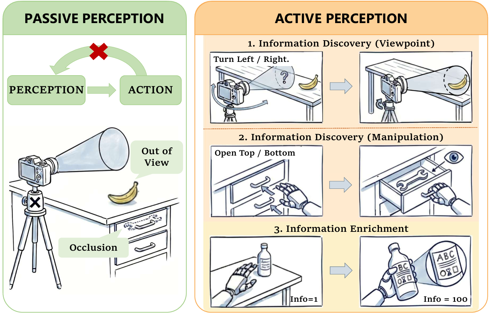

Act, Sense, Act: Learning Non-Markovian Active Perception Strategies from Large-Scale Egocentric Human Data
arXiv Code (Comming Soon)Abstract
Achieving generalizable manipulation in unconstrained environments requires the robot to proactively resolve information uncertainty, i.e., the capability of active perception. However, existing methods are often confined in limited types of sensing behaviors, restricting their applicability to complex environments. In this work, we formalize active perception as a non-Markovian process driven by information gain and decision branching, providing a structured categorization of visual active perception paradigms. Building on this perspective, we introduce CoMe-VLA, a cognitive and memory-aware vision-language-action (VLA) framework that leverages large-scale human egocentric data to learn versatile exploration and manipulation priors. Our framework integrates a cognitive auxiliary head for autonomous sub-task transitions and a dual-track memory system to maintain consistent self and environmental awareness by fusing proprioceptive and visual temporal contexts. By aligning human and robot hand-eye coordination behaviors in a unified egocentric action space, we train the model progressively in three stages. Extensive experiments on a wheel-based humanoid have demonstrated strong robustness and adaptability of our proposed method across diverse long-horizon tasks spanning multiple active perception scenarios.
Demo
Problem Formulation
Active perception is a non-Markovian decision process (NMDP) that incorporates two core mechanisms: (1) Information Gain; (2) Decision Branching. We also provide paradigms of visual active perception, including Information Discovery (Viewpoint/Manipulation Discovery) and Information Enrichment.

Method
Experiments
Experiments
BibTeX